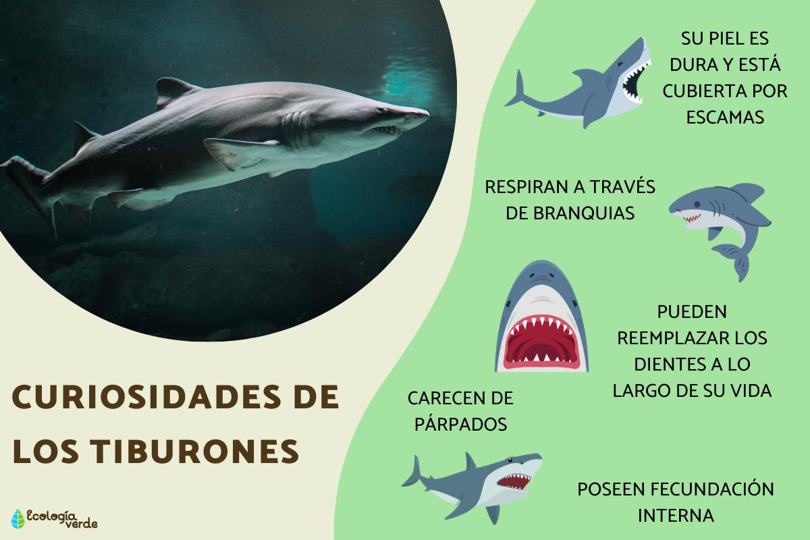

Los tiburones son peces cartilaginosos que habitan en los océanos desde hace más
de 400 millones de años. Se diferencian de los peces óseos porque su esqueleto interno
está compuesto enteramente por cartílago, un tejido fuerte, ligero y flexible que les otorga
una excelente movilidad. Existen más de 500 especies registradas en el mundo. Su morfología varía
drásticamente en tamaño, yendo desde los 17 centímetros del tiburón linterna enano hasta los 20 metros
de longitud del tiburón ballena, considerado el pez más grande del planeta. Su piel no tiene escamas comunes,
sino que está cubierta por dentículos dérmicos que reducen la fricción con el agua y mejoran su hidrodinámica al nadar